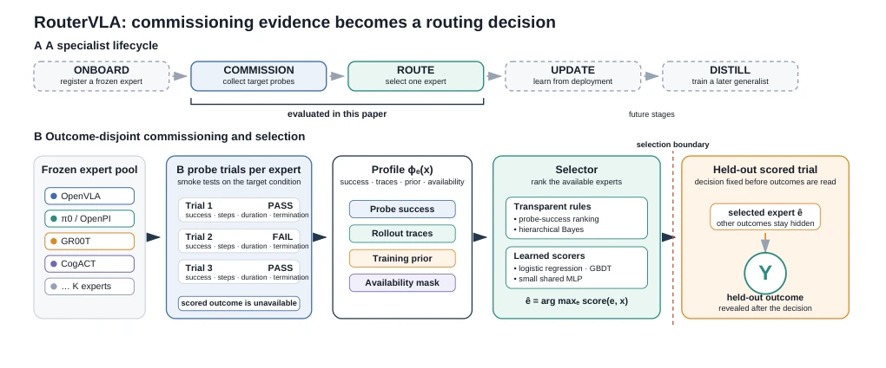
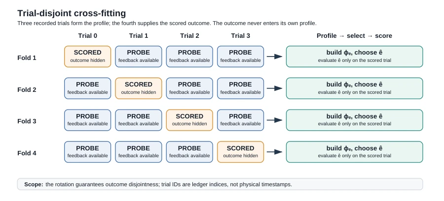
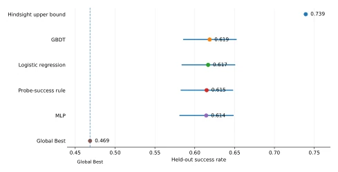
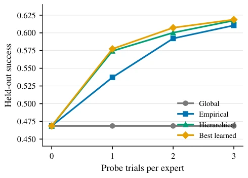

The most striking aspect of this paper lies in the "face-slapping" aspect: in the field of VLA routing, everyone competes on model capacity and feature engineering, only to discover that simple "success count statistics" can soundly outperform complex MLPs and GBDTs. It transforms the pre-deployment "smoke test" from a cost into a supervision signal, which is quite clever. However, the limitations are obvious: it relies on a fixed ledger, lacks dynamic validation in real physical environments, and scalar features fail when layouts change. Nevertheless, the "result separation" evaluation principle it proposes serves as an important guide to avoiding pitfalls in subsequent research, reminding us to strictly prevent data leakage when evaluating routing systems.
研究动机Motivation
现有路由系统如 RoboRouter (Chen et al. 2026b) 依赖语义检索，MoIRA (Kuzmenko and Shvai 2025) 依赖文本相似度，MergeVLA (Fu et al. 2025) 则合并架构。它们往往将多专家证据压缩为全局平均值，丢失了特定任务下的条件价值。论文指出，模型扩展提升个体专家，而部署扩展提升系统。现有工作未充分利用部署前的 commissioning 阶段，将其视为沉没成本而非监督信号，导致无法针对特定扰动选择互补专家。这限制了异构 VLA 池在实际部署中的潜力。
Existing routing systems such as RoboRouter (Chen et al. 2026b) rely on semantic retrieval, MoIRA (Kuzmenko and Shvai 2025) rely on text similarity, and MergeVLA (Fu et al. 2025) merges architectures. They often compress multi-expert evidence into global averages, losing conditional value under specific tasks. The paper points out that model scaling improves individual experts, while deployment scaling improves the system. Existing work fails to fully utilize the pre-deployment commissioning phase, treating it as a sunk cost rather than a supervision signal, leading to an inability to select complementary experts for specific perturbations. This limits the potential of heterogeneous VLA pools in actual deployment.
The core is "result-separated cross-fitting". The pipeline is divided into: 1. Building Commissioning Profile: Collect 3 probe trials for each expert, generating a 14-dimensional vector containing success statistics, trajectory summaries, and training priors. 2. Selector: Supports transparent rules (e.g., probe success rate) or learned models (Logistic/GBDT/MLP). 3. Scoring: Evaluate the selected expert using the 4th independent trial. The innovation lies in strictly prohibiting the scoring trial from entering its own Profile, preventing data leakage. Additionally, a "shortlist" strategy is proposed to reduce probing costs, and it is verified that scalar features are redundant after success evidence saturation.

Figure 1: RouterVLA turns commissioning evidence into an outcome-disjoint expert choice. Panel A places the evaluated Commission–Route link inside a longer specialist lifecycle. Panel B shows the decision boundary. Probe trials form per-expert profiles, a transparent or learned selector chooses one expert, and the held-out outcome is revealed only afterward. Update and distillation are future stages, not claims of the present study.

Figure 2: Four-fold trial-disjoint cross-fitting. Each row constructs profiles from three recorded trials and scores the selected expert on the fourth. The rotation guarantees outcome separation; trial IDs are ledger indices rather than physical timestamps.
实验Experiments
基于 LIBERO-Plus 账本（34,752 记录，398 变体，28 专家）。基线包括 Global Best 和 Hindsight 上界。主要结果：3 次探测下，简单探针规则将成功率从 0.4686 提升至 0.6149（+14.64pp），与复杂学习器无显著差异。消融显示，若允许同一试验复用，增益虚高 1.87 倍，证实结果分离必要性。失败分析指出布局扰动需视觉上下文，且 59.2% 行存在平局，需更多证据。
Based on the LIBERO-Plus ledger (34,752 records, 398 variants, 28 experts). Baselines include Global Best and Hindsight upper bound. Main results: Under 3 probes, the simple probe rule improves success rate from 0.4686 to 0.6149 (+14.64pp), with no significant difference compared to complex learners. Ablation shows that if the same trial is allowed to be reused, the gain is inflated 1.87 times, confirming the necessity of result separation. Failure analysis indicates that layout perturbations require visual context, and 59.2% of rows have ties, requiring more evidence.

Figure 3: Commissioning creates a large gain, while selector capacity changes little. Points show held-out success. Horizontal intervals for commissioned and learned methods are paired 95% intervals against Global Best, shifted to the absolute success-rate axis. The Hindsight bound is a realized upper reference, not an available policy. Three-seed diagnostic values are reported separately in Table 3; this figure reports the primary main-result aggregates.

Figure 4: Probe-depth sensitivity under a common can- didate pool. Additional probes improve every commis- sioned selector, while the no-probe Global Best baseline is flat; the curves converge by B = 3. The figure is a sensitivity diagnostic rather than a fresh-rollout learn- ing curve.